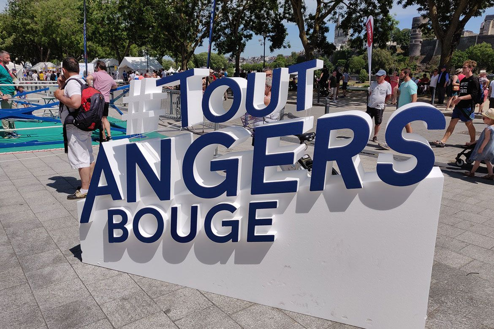

Angers, une ville sportive
2ème ville de France
du baromètre des villes cyclables de la Fédération française des usagers de la bicyclette (2020)

6 équipes sportives professionnelles
Angers SCO (football), UFAB, Les Ducs d’Angers (hockey sur glace), EAB, Les Loups d’Angers, Angers SCO Handball
275
associations sportives
383 installations sportives
1 boulodrome, 1 base d’aviron, 1 patinoire Olympique, 1 vélodrome, 1 bassin de 50m ...